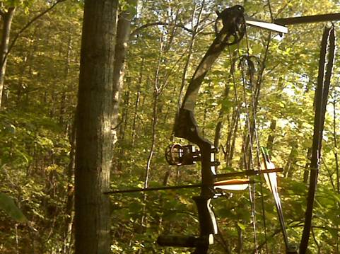
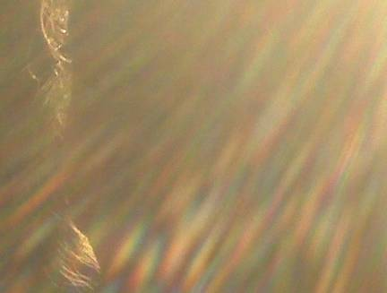
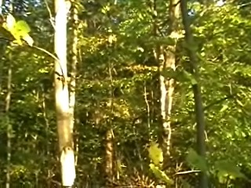
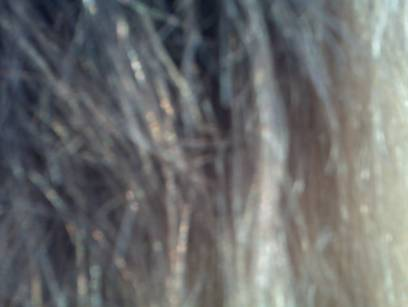

Solving the Mystery of Bruce Maccabee's "Mysterious Predetor Photos and UFOs"
Degree of completion of this article:
First published
【編】Bruce Maccabee が報告した「プレデター的存在、不思議な写真、UFO」の謎を解く （途中：その4） (2020-11-15)
Conclusion
- The "mystery photo" reported by Bruce Maccabee is below.
Mysterious Photo

Illustration of identity

- The identity of this mysterious photograph and the UFO sighted near the site at the same time are explained in detail below.
Solving the Mystery of the Mysterious Photograph
Arrange the photos taken in chronological order...
- According to Dr. Bruce Maccabee's wife (Jan), he took the photos in the following order. (1) 18:21 Selfie of herself (below).(2) She took one more selfie of herself, but she didn't like the image, so she erased it. (3) She saw a predator-like creature. (4) 18:23, She pointed the camera at the predator-like creature and took a picture. However, at the time she took the picture, it had already disappeared. This is the "mysterious photograph" in question (below).
Dr. Bruce Maccabee points out the puzzling thing about this photo
- Dr. Bruce Maccabee (now 78 years old, Ph.D. in physics, specializing in optics) is an expert in photoanalysis and has been analyzing UFO photos at MUFON's request for many years. He has analyzed many famous UFO photos for a long time. - According to Dr. Bruce Maccabee, the "mysterious photograph" in question has the following mysteries - (a) The photo does not show the tree as it should, but instead shows an optical distortion moving from the lower left to the upper right. The identity of this optical distortion is a mystery. - (b) The number of pixels in the photo is 528 x 400, which is abnormally small. The photos taken before and after are set to 1024 x 768, but only the photo in question, which is sandwiched between the two photos, has an extremely low pixel count. The camera has three settings (1600x1200, 1024x768, 640x480) for the number of pixels to shoot, but there is no 528x400 setting. Furthermore, Jan does not switch the pixel setting between shots. - (c) The resolution of color and brightness is much lower than that of ordinary photographs. Normally, there are about 100,000 colors, but this picture has only 27,000 colors.A follow-up test by Dr. Bruce Maccabee
- In his article, Dr. Bruce Maccabee makes a follow-up argument against the expected criticism (that Jan's hair is in the photo in question), and demonstrates that such criticism is invalid. - Next, assuming the possibility that the magnetic field of the UFO might have affected the photograph, he made a follow-up test by placing a powerful magnet close to the camera, and rejected this possibility.Dr. Bruce Maccabee's Conclusion
- The mystery of the "mysterious photograph" in question is unsolved.There is no conclusion as yet. This is offered as a reasonably well documented observation (with photo) of a strange optical effect combined with some strange effect on the camera.
It saves the reader the trouble of having to do the research beforehand...
- If you've read this far, the unusually low pixel count and the lack of trees in the scene should give you an idea. Maybe it's because ... That's what I suspected first. - But that's not the case. Because...ref: BlackBerry Pearl 8130 - Full phone specifications - https://www.gsmarena.com/blackberry_pearl_8130-3933.php- That's all the information we need to solve the mystery of this photo.The identity of this picture.
- What you see in the photo in question is not "optical distortion". What you see in the photo is - The sun shining on the camera and the intense lens flare caused by the sun. And - Jan's back hair in the sun and - Jan's face line - The proof is the illustration below. I did not include it in the illustration because it is messy, but the rim of the hat is also visible around the back of the hair on the upper part of the hat. As she recalls it, she held the camera in her right hand, about a foot and a half from her face (so that the scene in the viewing screen would be in focus for her eyes), pointed the camera in the direction of the distortion and took a picture.she testified that it was not a deliberate lie, and that she was just in a state of panic after encountering the mysterious incident, and her memory was confused because she was in a great hurry to take the picture. It's a state of being in what is commonly called a state of being in a panic. - If the camera was facing her, "her seat was facing east" and the western sun would enter the camera as stated in the testimony. The above illustration makes that clear. - When the sun shines into the camera, the image on the side where the sun shines into the camera is mostly overexposed (super) and nothing can be seen. Intense lens flare also occurs, and the entire image is covered with lens flare. In fact, you can see what happens from the above illustration. - The reason why the pixel count is lower is probably because of the following reasons. - The camera's camera shake suppression function interpreted the severe lens flare as camera shake and tried to compensate for it. The camera's image stabilization software thought it had corrected the camera shake (*1), but in reality it removed the (super)overexposed areas. - The camera's image adjustment software (thoughtfully?) adjusted the (overexposed) parts - the top half and the right half. Cut. - The reason why the resolution of color and brightness is much lower than that of a normal photograph is probably... - The camera's image sensor was (super-)overexposed and saturated in the sensitivity range due to the direct hit of the sun in the west. Even so, the camera's adjustment software was able to correct it to the point where you could see the back of Jan's hair. - The above explanation of pixel count and color resolution degradation is disprovable. In other words, we can actually test this by shooting the camera in question under similar conditions (with the sun shining in the west).
As she recalls it, she held the camera in her right hand, about a foot and a half from her face (so that the scene in the viewing screen would be in focus for her eyes), pointed the camera in the direction of the distortion and took a picture.she testified that it was not a deliberate lie, and that she was just in a state of panic after encountering the mysterious incident, and her memory was confused because she was in a great hurry to take the picture. It's a state of being in what is commonly called a state of being in a panic. - If the camera was facing her, "her seat was facing east" and the western sun would enter the camera as stated in the testimony. The above illustration makes that clear. - When the sun shines into the camera, the image on the side where the sun shines into the camera is mostly overexposed (super) and nothing can be seen. Intense lens flare also occurs, and the entire image is covered with lens flare. In fact, you can see what happens from the above illustration. - The reason why the pixel count is lower is probably because of the following reasons. - The camera's camera shake suppression function interpreted the severe lens flare as camera shake and tried to compensate for it. The camera's image stabilization software thought it had corrected the camera shake (*1), but in reality it removed the (super)overexposed areas. - The camera's image adjustment software (thoughtfully?) adjusted the (overexposed) parts - the top half and the right half. Cut. - The reason why the resolution of color and brightness is much lower than that of a normal photograph is probably... - The camera's image sensor was (super-)overexposed and saturated in the sensitivity range due to the direct hit of the sun in the west. Even so, the camera's adjustment software was able to correct it to the point where you could see the back of Jan's hair. - The above explanation of pixel count and color resolution degradation is disprovable. In other words, we can actually test this by shooting the camera in question under similar conditions (with the sun shining in the west).（*1）
- Depending on the system, the image stabilization function of mobile phones is often accompanied by a reduction in the number of effective pixels. As the degree of camera shake increases, the rate of decrease in the number of effective pixels also increases.answer of hint
- I'll give you the disclosing the secret of a trick of my previous post where I stated the following.- If you've read this far, the unusually low pixel count and the lack of trees in the scene should give you an idea. Maybe it's because ... That's what I suspected first. - But that's not the case. Because...- The thing is a "selfie camera" (for selfies only). However, the cellular phone in question is an old type (more than 10 years old) and does not have a "selfie camera" (see below).
The identity of the predator-like creature.
- The elucidation of the "mysterious photo" above is just a side note, or a sideshow, or a prelude, so to speak. - The main topic is the elucidation of the Predator and the UFO in this case. However, in terms of the difficulty of the mystery, it is much lower than the first part. In other words, it is much easier to solve. - I will add an explanation of this at a later date.UFO Identity Sighted Almost Simultaneously
- I will add an explanation of this at a later date.Specific testimonies about UFOs
- I will add an explanation of this at a later date.Extra: The true nature of the silence in the surrounding environment
- I will add an explanation of this at a later date.
(2022-06-17 begin)Preface
- For some reason, this explanation of the identity of the Predator and the UFOs has been left unexplained for more than a year because I was too lazy to do it. It is time to put this article away and be done with it.The identity of the predator-like creature
- First, we will discuss specific testimonies about predator-like creature and then describe their true nature.Specific testimonials regarding this creature
- The following is Jan's testimony.Suddenly the woods went quiet. Noise stopped. The silence was “weird.” It so surprised and unnerved her that she wrote a text message to her friend (thereby documenting this event): Something is wrong. The woods just went to a dead silence. No squirrels, no birds, no crickets. Is odd! (6:23 PM EDT) She thought a coyote or maybe a black panther or some predator animal caused the quiet as she knows (as hunters know) that when a predator such as a bear, for example, enters an area the other animals tend to become quiet. Then she became aware that a weird visual “effect” was moving rightward across her field of view at an apparent distance of maybe fifteen to twenty feet. She described it as if looking through "saran wrap." Perhaps a more apt comparison would be like looking at a mirage above a hot road. She compared this distortion of the scene as being somewhat like the effect of the invisible creature in the PREDATOR movie! This distortion was at a higher altitude than her 15 ft above the ground, perhaps about 25 ft above the ground.. She took her glasses off and rubbed her right eye thinking at first she had a floater (a mote in the eye). But after rubbing it was still there and not a floater. It moved to her right from about 15 degrees to the right of straight ahead to about 45 degrees to the right (see the diagram below, not to scale). Then it disappeared...things looked normal and she could hear the normal sounds again.The identity of the predator-like creature
- This identity is the "whirlwind" that passed over the trees. The evidence is described as follows. - She described it as if looking through "saran wrap." - like looking at a mirage above a hot road.Identity of UFOs sighted at almost the same time
Specific testimonials regarding this UFOs
- The following are testimonies concerning these UFOs.We were playing tonight on the field, and just as it was starting to get dark, a huge bright light appears over the field and begins to move sideways, then in a matter of 5 seconds or so it disappeared, getting smaller almost every second. About 5 minutes later it reappeared, this time it was Amber in color. I know of 4 people who saw this, and according to an upperclassman, the same thing happened last year and they actually stopped rehearsal. ... All of a sudden I began to notice a bright light in the sky. There had been plenty of airplanes about earlier so I think my mind dismissed it as an airplane but, when the guy standing next to me yelled, "What the hell is that?" I knew it was something else (not an airplane). I looked up and the two of us followed it for about 3 to 5 seconds. Whatever this thing was, it moved to the right and got smaller as if it shrank more every second and then it was gone, as if it had never been there. I actually remember looking over at the guy next to me, just as he looked at me, with his mouth agape and my eyes were probably wide open. The thing is, we were dumbfounded. It all happened so quickly our minds couldn't process it. I think I was trying to rationalize when my mind said "airplane" but then I said to myself, "No, airplanes don't disappear and they aren't bright white circles." A few minutes had probably passed by this time and I don't even think the two of us (my friend and I) even played for a while. Instead, we kind of just stared at the sky. By this time the fellow next to me had started asking people around us if they had seen it. He asked the girl saxophone player who stood in our row if she had seen it. She just got a sort of worried look on her face and went back to marching, dismissing what she had just heard. By this time I'd say 5 to 8 minutes has passed since the initial light had disappeared and suddenly is appeared again. This time it was smaller and amber in color. It continued to travel on its course (to the right) and disappeared into the starry night. We saw nothing else after this but every once in a while I felt I would see something out of the corner of my eye, but I was probably just imagining things.This UFO identity
- This UFO identity is also a "whirlwind" that passed overhead. - The dust and other particles caught in the whirlwind were reflected by sunlight and appeared as "a bright light in the sky", "bright white circles", or "amber in color." - Because it is a whirlwind, the following behavior is quite natural. "it moved to the right and got smaller as if it shrank more every second and then it was gone, as if it had never been there."Supplemental: Reason for silence in the surrounding environment
The small animals in the forest that were alarmed by the whirlwind, misinterpreting it as an attack by a bird of prey such as a hawk or eagle, simply quieted down. Therefore, it should have nothing to do with the "Oz factor" often reported in UFO phenomena. (2022-06-17 end)
Source article
ref: JAN' S WEIRD PHENOMENON - http://brumac.mysite.com/JANs_Phenomenon/JANs_Phenomenon.htm
Quoting the source article in its entirety
- I'll quote the source article in full in case it disappears.“PREDATOR” IN THE FOREST or JAN’S WEIRD EXPERIENCE
(Preliminary Report) It was Wednesday, September 29, the next to last day in September and hunting season (for deer) in Ohio was just a 4 days old. The day started cool and damp then became a beautiful, warm day with a nice sunset. Jan was anxious to begin hunting. Her method of hunting consisted of waiting and watching while seated in a “tree stand.” The seat of her stand is at the top of a 15 ft ladder. Her seat is in the northwestern corner of a many-acre wood that is surrounded by large planted fields and low density residential areas. Her seat faces the east and is surrounded by on all sides by trees. She didn't hunt in the morning but she did climb up the 15 ft to the seat to test the newly installed bow hanger. She took a picture of her bow hanging from the bow hanger. She took the picture (and other pictures below) with her Blackberry "Pearl", Model 8130 camera phone. The phone records the date and time of each picture, the spatial resolution (number of pixels horizontal and vertical) and the total "byte" size of the each picture file.  BOW AND HOLDER PHOTOGRAPHED FROM THE TREE STAND SEPT 29, 2010 AT 10:14 AM resolution 1024x768 (404 kb) Jan had a strange experience while in the trees in the late afternoon and evening. She went to her tree stand at about 5:30 and sat. A squirrel was dropping nut pieces on her head and animals, birds and crickets were moving and making noise. To occupy her time she was “texting” with her phone (a means of silent communication). At about 6:21 PM she decided to photograph herself in the tree stand. She was facing east with the sun at her back. She held the camera above and to her left. The sun was behind her, low in the west, with the light filtering through the tree branches. She took the first photo with the camera a bit above her head and to her left so she could get a photo looking down past her to the ground. She then decided to take a second. She took the second photo and didn’t like it so she deleted it.As she recalls it, she held the camera in her right hand, about a foot and a half from her face (so that the scene in the viewing screen would be in focus for her eyes), pointed the camera in the direction of the distortion and took a picture. As she recalls it the picture was taken immediately after the distortion disappeared. The picture should show the nearby trees. That’s not what the picture shows!
ANALYSIS OF THE PHOTOGRAPH
The sudden silence in the forest was strange but nothing compared to the strangeness of the optical distortion that moved through the trees. Whatever that was, it appears to have left its imprint in the photo Jan took. Below is the above picture after some brightening. The distortion moved from left to right near the top of the picture.  DISTORTION PHOTO AFTER SLIGHT BRIGHTENING This picture below shows the scene as photographed under normal conditions the next day but an hour earlier.  COMPARISON PHOTO TAKEN UNDER NORMAL CONDITIONS SEPT. 30 at 5:36 PM resolution: 1024 x 768 As can be seen, the distortion photo should show trees and foliage in the forest at distances from about 10 ft to about 50 ft (and beyond). The tree images should be sharply focused as they are in the preceding and following photos of herself. There is just no way that the normal operation of the camera under normal optical conditions of the scene could result in the distortion picture. There are two other anomalies. First, all the other pictures were taken are at a spatial resolution of 1024 pixels (horizontal) by 768 pixels (vertical), yet this single picture was taken at 528 x 400. Second, the other pictures had a "byte" size over 200 kb whereas the size of this picture is only 43.2 kb Consider first the resolution. The camera has three settings for spatial resolution: "large", which corresponds to 1600 by 1200 pixels (ratio: 1.333), "medium" which corresponds to 1024 by 768 pixels (ratio: 1.337) and small, which corresponds to 640 by 480 pixels (ratio: 1.333; NTSC standard television resolution). However, the spatial resolution of the anomalous picture, as recorded by the phone, was 528 by 400 (ratio: 1.320). This is an abnormal spatial resolution. Jan did not try to change the resolution (she didn't even know how until this investigation determined how it is done with this camera) but even if she had tried, she couldn't have set the camera for 528 by 400! So, how did the camera get set to this unusual resolution? With regard to the image size, note that the total image size in bytes is typically 200 kb or more for pictures at the "medium" resolution. However, the anomalous photo has a much smaller “byte size” and this isn’t just a result of the lower spatial resolution. The pixel resolution ratio of the medium size to the anomalous size is (1024x768)/(528x400) = 3.7 whereas the “byte size” ratio is (using the 306 kb picture that follows the distortion picture) 306 kb/43.2 kb = 7.1. The difference in the byte size ratio must be a result of reduced number of brightness levels, i.e., the “brightness scale” of the anomalous photo is considerably less than the same scale for the normal pictures. (The photo processing program shows about 100,000 color levels for the normal pictures but only 27,000 for the anomalous photo.) A “HAIRY” EXPERIMENT The distortion picture looks like a collection of elongated reflections from a filamentary surface such as one might find in a photo of hair. That’s not to suggest that Jan’s hair was in front of the camera because it couldn’t have been. Jan’s hair was tied in a pony tail and she wore a cap over it. The longest hair was draped over her shoulders and onto her back, as the pictures above show. She held the camera about a foot and a half in front of her and to the right. Aside from the fact that most of her hair was under the cap, her hair isn’t long enough to reach in front of the camera at a distance of 1 ? ft. Hence there is no way her hair could have been in front of the camera. Nevertheless, it is instructive to compare photos taken close to her hair with the distortion photo. Two such photos are shown below. They were taken with her hair rather spread out. The first of these photos shows what the hair looks like in varying levels of illumination by the sun which was low in the west. At the left side and center the hair is thick but at the right side it is “transparent” and one can see through the hair to the well focused background. For the second photo the camera was held only an inch or so from her hair.EXPERIMENT WITH SOLAR ILLUMINATION OF HAIR The camera was about a foot from her hair  CLOSE-UP PHOTO OF HAIR The camera was only an inch or so from the hair. Examining the “hair photos” one can see a “stranding” effect that is somewhat similar to what appears in the distortion photo but there is very little of the color fringing or “rainbow” or “spectrum” effect (colors separated as with a glass prism) that appears everywhere in the distortion photo. Where the hair is thin enough to be somewhat transparent one sees the background, perhaps dimly, but undistorted. Thus one might conclude that if something like hair (fine strands) were placed in front of the camera the strands themselves would be out of focus but the background, if visible through the strands, would be in focus. MAGNETIC EXPERIMENT Occasionally there have been reports that suggest the presence of a strong magnetic field in the vicinity of a UFO. Hence I tested the effect on the phone of a strong Alnico bar magnet. The upper part of the Blackberry contains the viewing screen and the lower part contains the control buttons. Placing the end of the magnet at the top of the phone had little or no discernible effect on photos taken. When the magnet was moved to the lower half the camera “turned off,” the screen went blank and no photo could be taken, as if the magnetic field effected the electronics in the camera. When the magnet was removed (moved several inches or more from the camera) the camera resumed normal operation. On presumes, then, that if the camera had been immersed in a strong magnetic field due that accompanied the distortion, it would not have been able to take any picture. This suggests then, that if the distortion were some sort of “impossible” magnetic effect, this effect was confined to a small volume of space at a distance from the camera.. CONCLUSION There is no conclusion as yet. This is offered as a reasonably well documented observation (with photo) of a strange optical effect combined with some strange effect on the camera. APPENDIX STRANGE LIGHTS by M.P. (Note: the following sighting occurred between 7:50 and 8:00 PM, about half an hour after sunset. The following provides further details of the sighting reported in the text above.) This particular event took place on the 29th of September, Wednesday night, at an outdoor high school band rehearsal. It was dark behind us all and we had been practicing the same drill move maybe eight to ten times. I remember feeling that this was monotonous and I could tell by the groans and expressions of those around me that the monotony was getting to them as well. I remember the music being played was the last few measures of the song, "The Heat Is On In Saigon" from the Broadway musical, "Miss Saigon." The saxophone section stood right about the center of the field with the clarinet section right behind us. (You'll see why this is important.) All of a sudden I began to notice a bright light in the sky. There had been plenty of airplanes about earlier so I think my mind dismissed it as an airplane but, when the guy standing next to me yelled, "What the hell is that?" I knew it was something else (not an airplane). I looked up and the two of us followed it for about 3 to 5 seconds. Whatever this thing was, it moved to the right and got smaller as if it shrank more every second and then it was gone, as if it had never been there. I actually remember looking over at the guy next to me, just as he looked at me, with his mouth agape and my eyes were probably wide open. The thing is, we were dumbfounded. It all happened so quickly our minds couldn't process it. I think I was trying to rationalize when my mind said "airplane" but then I said to myself, "No, airplanes don't disappear and they aren't bright white circles." A few minutes had probably passed by this time and I don't even think the two of us (my friend and I) even played for a while. Instead, we kind of just stared at the sky. By this time the fellow next to me had started asking people around us if they had seen it. He asked the girl saxophone player who stood in our row if she had seen it. She just got a sort of worried look on her face and went back to marching, dismissing what she had just heard. By this time I'd say 5 to 8 minutes has passed since the initial light had disappeared and suddenly is appeared again. This time it was smaller and amber in color. It continued to travel on its course (to the right) and disappeared into the starry night. We saw nothing else after this but every once in a while I felt I would see something out of the corner of my eye, but I was probably just imagining things.
FYI: The source that Jan in this article is Dr. Bruce Maccabee's wife
Very interesting. Bruce Very interesting. Bruce Maccabee’s wife (Jan) reported an encounter with a Predator-like being in the woods to David Paulides of Missing 411 fame. It’s in his newest book. I also recall that when David discussed Jan’s encounter on Coast to coast, at least two people called in stating that they had seen the exact same entity, one of which I believe was also in Hawaii. ref: A WItness Describes a WEIRD Predator Being Seen in Hawaii ? WHITLEY STRIEBER'S UNKNOWN COUNTRY - https://www.unknowncountry.com/the-experience/a-witness-describes-a-weird-predator-being-seen-in-hawaii/(2020-10-31) (2020-11-02) (2020-11-06) (2020-11-15) (2022-06-17)